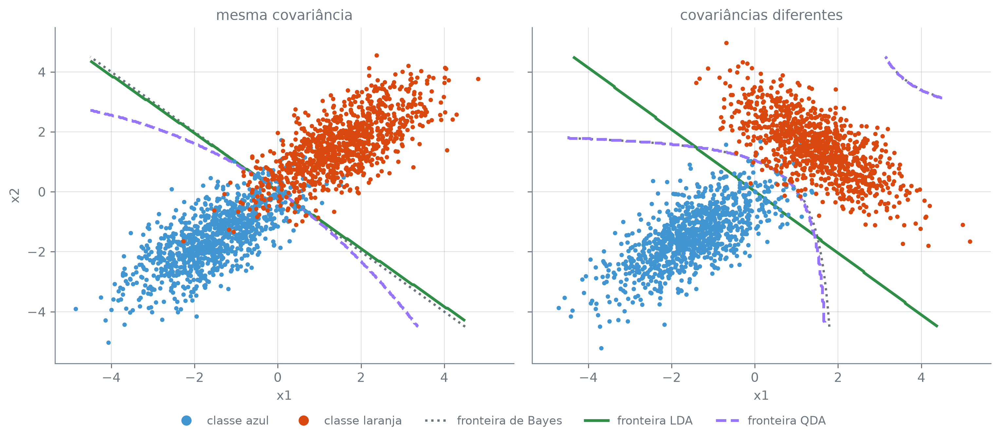

p = X.shape[1]
K = int(y.nunique())
parametros_lda = p * (p + 1) // 2
parametros_qda = K * p * (p + 1) // 2
p, K, parametros_lda, parametros_qda(3, 2, 6, 12)Esta seção corresponde às seções 4.4.1, 4.4.3 e 4.4.4 de James et al. (2023).
A seção 9.2 modela \(\Pr(Y \mid X)\) direto: ajusta a curva logística e lê o coeficiente sem nunca perguntar de onde vieram os valores de \(X\) em cada classe. LDA, QDA e Naive Bayes fazem o caminho inverso — modelam como \(X\) se distribui dentro de cada classe, e só depois usam o teorema de Bayes para virar essa distribuição em \(\Pr(Y \mid X)\). A troca compensa em duas situações que deixam a logística mal-comportada: quando as classes estão bem separadas, os coeficientes da regressão logística ficam surpreendentemente instáveis; e quando há poucas observações mas a distribuição de \(X\) dentro de cada classe é aproximadamente normal, assumir essa forma aproveita melhor o pouco dado do que estimar a fronteira direto, sem suposição nenhuma.
Cada um dos três métodos parte da mesma pergunta: como \(X\) se distribui dentro da classe \(k\)? Chame de \(\pi_k\) a proporção de observações que vêm da classe \(k\) antes de olhar para \(X\) — a probabilidade a priori —, e de \(f_k(x)\) a densidade de \(X\) entre as observações da classe \(k\): grande onde um \(X\) daquela classe é comum, pequena onde é raro. O teorema de Bayes transforma isso na probabilidade que interessa, a de \(Y\) dado \(X\):
\[ \Pr(Y = k \mid X = x) = \frac{\pi_k f_k(x)}{\sum_{l=1}^{K} \pi_l f_l(x)}. \]
\(\pi_k\) é fácil de estimar — a fração das observações de treino que pertence à classe \(k\). \(f_k(x)\) é a parte difícil, e é exatamente aí que LDA, QDA e Naive Bayes discordam: cada um assume uma forma diferente para essa densidade, e é essa forma, e só ela, que decide o formato da fronteira entre as classes.
LDA assume que, dentro de cada classe, \(X\) segue uma normal multivariada em torno de uma média \(\mu_k\) própria da classe, e que todas as classes compartilham a mesma matriz de covariância \(\Sigma\). Plugando essa densidade no teorema de Bayes e tomando o log, a classe escolhida é a que maximiza
\[ \delta_k(x) = x^T \Sigma^{-1} \mu_k - \frac{1}{2} \mu_k^T \Sigma^{-1} \mu_k + \log \pi_k. \]
Com uma matriz de covariância só, o termo \(x^T \Sigma^{-1} x\) que apareceria ao expandir a distância de \(x\) até cada \(\mu_k\) é o mesmo em toda classe — cancela ao comparar \(\delta_k(x)\) com \(\delta_l(x)\), e sobra apenas uma combinação linear de \(x\). É daí, e só daí, que sai a fronteira linear que dá nome ao método.
QDA solta a suposição mais forte da LDA: cada classe passa a ter a sua própria matriz de covariância, \(\Sigma_k\). A classe escolhida passa a maximizar
\[ \delta_k(x) = -\frac{1}{2}(x-\mu_k)^T \Sigma_k^{-1} (x-\mu_k) - \frac{1}{2}\log|\Sigma_k| + \log \pi_k. \]
Sem uma covariância comum, o termo \(x^T \Sigma_k^{-1} x\) não cancela mais entre classes — ele carrega o índice \(k\) agora — e sobra uma função quadrática de \(x\): a fronteira se curva.
A liberdade custa parâmetro: cada matriz de covariância com \(p\) preditores tem \(p(p+1)/2\) entradas livres a estimar; a LDA estima uma só, a QDA estima uma por classe.
(3, 2, 6, 12)Com os três preditores que o resto desta seção usa sobre o Default — saldo, renda e o indicador de estudante, \(p=3\) — e as duas classes de inadimplência, \(K=2\): a LDA estima 6 parâmetros de covariância; a QDA, 12, o dobro. É a mesma troca que a seção 7.3 descreveu entre um ajuste paramétrico rígido e um mais livre, só que dentro da própria família normal — menos parâmetros pede menos dado e trava a fronteira numa forma rígida (linear); mais parâmetros exige mais dado e libera uma fronteira mais flexível (quadrática). É o mesmo compromisso viés-variância que a seção 7.6 mediu para regressão: a forma rígida da LDA carrega mais viés e menos variância; a liberdade extra da QDA, menos viés e mais variância.
Naive Bayes troca a suposição sobre a forma da densidade por uma suposição sobre a relação entre os preditores: dentro de cada classe, eles são independentes. A densidade conjunta se fatora num produto de densidades de um preditor só:
\[ f_k(x) = f_{k1}(x_1) \times f_{k2}(x_2) \times \cdots \times f_{kp}(x_p). \]
Isso elimina de vez a parte mais cara de estimar \(f_k\): a associação entre os preditores, que com muitos preditores e pouco dado é a mais difícil de estimar bem. A suposição quase nunca é exata — saldo e renda, por exemplo, não têm por que ser independentes dentro do grupo de quem fica inadimplente —, mas trocar uma associação difícil de estimar por presumir que ela não existe reduz a variância do ajuste mais do que costuma acrescentar de viés, e é por isso que o método funciona bem na prática mesmo quando a suposição que o batiza é falsa.
| O que assume sobre X dentro da classe | Fronteira | |
|---|---|---|
| LDA | normal, uma covariância comum a todas as classes | linear |
| QDA | normal, uma covariância própria por classe | quadrática |
| Naive Bayes | preditores independentes dentro da classe | depende da densidade marginal escolhida para cada preditor |
A suposição da LDA — uma covariância só — acerta quando as classes de fato compartilham a forma da nuvem de pontos, e erra quando não compartilham. Dado simulado, em que a covariância verdadeira de cada classe é escolhida por quem gera o dado, deixa comparar os dois casos lado a lado: duas classes com a mesma covariância num painel, com covariâncias diferentes no outro. Um sorteio de treino só não decide isso de forma confiável — a diferença entre LDA e QDA num único sorteio pequeno é ruído tanto quanto sinal —, então o que decide é repetir o sorteio muitas vezes contra o mesmo conjunto de teste.
rng = np.random.default_rng(9)
media_azul = np.array([-1.5, -1.5])
media_laranja = np.array([1.5, 1.5])
cov_comum = np.array([[1.0, 0.7], [0.7, 1.0]])
cov_laranja_diferente = np.array([[1.0, -0.7], [-0.7, 1.0]])
n_treino_por_classe = 30
n_teste_por_classe = 20000
n_replicas = 200
def gera_duas_classes(cov_azul, cov_laranja, n, rng):
azul = rng.multivariate_normal(media_azul, cov_azul, size=n)
laranja = rng.multivariate_normal(media_laranja, cov_laranja, size=n)
X_gerado = np.vstack([azul, laranja])
y_gerado = np.concatenate([np.zeros(n), np.ones(n)])
return X_gerado, y_gerado
# Um conjunto de teste grande e FIXO por painel, sorteado uma vez e nunca usado
# para ajustar nada: mede os n_replicas sorteios de treino a seguir contra o
# mesmo alvo, em vez de cada um contra o seu próprio.
X_teste_comum, y_teste_comum = gera_duas_classes(cov_comum, cov_comum, n_teste_por_classe, rng)
X_teste_diferente, y_teste_diferente = gera_duas_classes(
cov_comum, cov_laranja_diferente, n_teste_por_classe, rng
)
erros_lda_comum = np.empty(n_replicas)
erros_qda_comum = np.empty(n_replicas)
erros_lda_diferente = np.empty(n_replicas)
erros_qda_diferente = np.empty(n_replicas)
for i in range(n_replicas):
X_treino_comum, y_treino_comum = gera_duas_classes(cov_comum, cov_comum, n_treino_por_classe, rng)
X_treino_diferente, y_treino_diferente = gera_duas_classes(
cov_comum, cov_laranja_diferente, n_treino_por_classe, rng
)
lda_comum_i = LinearDiscriminantAnalysis().fit(X_treino_comum, y_treino_comum)
qda_comum_i = QuadraticDiscriminantAnalysis().fit(X_treino_comum, y_treino_comum)
lda_diferente_i = LinearDiscriminantAnalysis().fit(X_treino_diferente, y_treino_diferente)
qda_diferente_i = QuadraticDiscriminantAnalysis().fit(X_treino_diferente, y_treino_diferente)
erros_lda_comum[i] = 1 - lda_comum_i.score(X_teste_comum, y_teste_comum)
erros_qda_comum[i] = 1 - qda_comum_i.score(X_teste_comum, y_teste_comum)
erros_lda_diferente[i] = 1 - lda_diferente_i.score(X_teste_diferente, y_teste_diferente)
erros_qda_diferente[i] = 1 - qda_diferente_i.score(X_teste_diferente, y_teste_diferente)
media_erro_lda_comum = float(erros_lda_comum.mean())
media_erro_qda_comum = float(erros_qda_comum.mean())
media_erro_lda_diferente = float(erros_lda_diferente.mean())
media_erro_qda_diferente = float(erros_qda_diferente.mean())
fracao_lda_vence_comum = float((erros_lda_comum < erros_qda_comum).mean())
fracao_qda_vence_diferente = float((erros_qda_diferente < erros_lda_diferente).mean())
(
round(media_erro_lda_comum, 4), round(media_erro_qda_comum, 4), round(fracao_lda_vence_comum, 2),
round(media_erro_lda_diferente, 4), round(media_erro_qda_diferente, 4), round(fracao_qda_vence_diferente, 2),
)(0.0556, 0.0572, 0.73, 0.0266, 0.0105, 0.99)Repetindo o sorteio de treino 200 vezes — sempre com n_treino_por_classe=30 — contra o mesmo conjunto de teste fixo de 20.000 pontos por classe em cada painel: no painel de covariância comum, a LDA erra em média 5,56% contra 5,72% da QDA, e a LDA erra menos em 73% dos 200 sorteios — uma vantagem sistemática, mas modesta. No painel de covariâncias diferentes, a LDA erra em média 2,66% contra 1,05% da QDA, e a QDA erra menos em 99% dos 200 sorteios — quase toda corrida. A suposição da LDA, quando vale, compensa pouco; quando não vale, o preço de mantê-la é grande.
Os mesmos dois cenários, mas com LDA e QDA ajustados agora sobre um treino bem maior — 1.000 pontos por classe, contra os 30 usados acima —, deixam a fronteira ajustada perto da verdade em vez de perto do ruído de uma amostra pequena; é essa fronteira, ao lado da fronteira de Bayes — a fronteira ótima, que sai direto das densidades normais verdadeiras que geraram o dado, sem ajustar modelo nenhum —, que a figura a seguir desenha.
n_treino_figura_por_classe = 1000
X_treino_comum_fig, y_treino_comum_fig = gera_duas_classes(cov_comum, cov_comum, n_treino_figura_por_classe, rng)
X_treino_diferente_fig, y_treino_diferente_fig = gera_duas_classes(
cov_comum, cov_laranja_diferente, n_treino_figura_por_classe, rng
)
lda_comum_fig = LinearDiscriminantAnalysis().fit(X_treino_comum_fig, y_treino_comum_fig)
qda_comum_fig = QuadraticDiscriminantAnalysis().fit(X_treino_comum_fig, y_treino_comum_fig)
lda_diferente_fig = LinearDiscriminantAnalysis().fit(X_treino_diferente_fig, y_treino_diferente_fig)
qda_diferente_fig = QuadraticDiscriminantAnalysis().fit(X_treino_diferente_fig, y_treino_diferente_fig)
def log_densidade_normal(pontos, media, cov):
p = media.shape[0]
inv_cov = np.linalg.inv(cov)
log_det_cov = np.log(np.linalg.det(cov))
diff = pontos - media
forma_quadratica = np.einsum("ij,jk,ik->i", diff, inv_cov, diff)
return -0.5 * p * np.log(2 * np.pi) - 0.5 * log_det_cov - 0.5 * forma_quadratica
fig, (ax1, ax2) = plt.subplots(1, 2, figsize=(11, 4.6), sharex=True, sharey=True)
grade_x = np.linspace(-4.5, 4.5, 300)
grade_y = np.linspace(-4.5, 4.5, 300)
malha_x, malha_y = np.meshgrid(grade_x, grade_y)
pontos_grade = np.column_stack([malha_x.ravel(), malha_y.ravel()])
paineis = [
(ax1, X_treino_comum_fig, y_treino_comum_fig, lda_comum_fig, qda_comum_fig, cov_comum, "mesma covariância"),
(
ax2, X_treino_diferente_fig, y_treino_diferente_fig, lda_diferente_fig, qda_diferente_fig,
cov_laranja_diferente, "covariâncias diferentes",
),
]
for ax, X_treino, y_treino, modelo_lda, modelo_qda, cov_laranja_verdadeira, titulo in paineis:
previsao_lda_grade = modelo_lda.predict(pontos_grade).reshape(malha_x.shape)
previsao_qda_grade = modelo_qda.predict(pontos_grade).reshape(malha_x.shape)
diferenca_log_densidade = (
log_densidade_normal(pontos_grade, media_azul, cov_comum)
- log_densidade_normal(pontos_grade, media_laranja, cov_laranja_verdadeira)
).reshape(malha_x.shape)
ax.scatter(X_treino[y_treino == 0, 0], X_treino[y_treino == 0, 1], color="C0", s=6, zorder=3)
ax.scatter(X_treino[y_treino == 1, 0], X_treino[y_treino == 1, 1], color="C1", s=6, zorder=3)
ax.contour(
malha_x, malha_y, diferenca_log_densidade, levels=[0], colors="#6C757D", linewidths=1.8,
linestyles="dotted",
)
ax.contour(malha_x, malha_y, previsao_lda_grade, levels=[0.5], colors="C2", linewidths=2.2)
ax.contour(
malha_x, malha_y, previsao_qda_grade, levels=[0.5], colors="C3", linewidths=2.2, linestyles="dashed"
)
ax.set_xlabel("x1")
ax.set_title(titulo)
ax1.set_ylabel("x2")
legenda_fronteiras = [
Line2D([], [], marker="o", linestyle="None", color="C0", markersize=7, label="classe azul"),
Line2D([], [], marker="o", linestyle="None", color="C1", markersize=7, label="classe laranja"),
Line2D([], [], color="#6C757D", linewidth=1.8, linestyle=":", label="fronteira de Bayes"),
Line2D([], [], color="C2", linewidth=2.2, label="fronteira LDA"),
Line2D([], [], color="C3", linewidth=2.2, linestyle="dashed", label="fronteira QDA"),
]
fig.legend(handles=legenda_fronteiras, loc="lower center", ncols=5, bbox_to_anchor=(0.5, -0.05), frameon=False)
plt.tight_layout()
plt.show()
A fronteira de Bayes dá ao leitor uma régua para julgar as outras duas. No painel de covariância comum, ela é reta — as duas classes de fato compartilham \(\Sigma\) —, e a fronteira do LDA praticamente a cobre; a do QDA se afasta dela, curvando para acompanhar uma diferença de covariância que não existe de verdade. No painel de covariâncias diferentes, a fronteira de Bayes se curva, e é a do QDA que a acompanha de perto; a do LDA, presa a ser reta, erra a curva inteira. É a mesma assimetria que a média sobre 200 sorteios mediu acima, agora visível: o preço de a LDA manter uma suposição errada é maior do que o preço de a QDA estimar uma covariância a mais que não precisava.
Sobre o Default, com os mesmos três preditores usados acima — saldo, renda e o indicador de estudante —, LinearDiscriminantAnalysis, QuadraticDiscriminantAnalysis e GaussianNB, as três classes do scikit-learn correspondentes aos três métodos, ajustam LDA, QDA e Naive Bayes exatamente como definidos acima; a GaussianNB estima cada densidade marginal \(f_{kj}\) como uma normal — a opção mais simples entre as que James et al. (2023) lista para um preditor quantitativo; as outras são não paramétricas, um histograma ou uma densidade por kernel em vez de uma forma fixa.
lda = LinearDiscriminantAnalysis().fit(X, y)
qda = QuadraticDiscriminantAnalysis().fit(X, y)
nb = GaussianNB().fit(X, y)
erro_lda = float((lda.predict(X) != y).mean())
erro_qda = float((qda.predict(X) != y).mean())
erro_nb = float((nb.predict(X) != y).mean())
erro_trivial = float(y.mean())
round(erro_lda, 4), round(erro_qda, 4), round(erro_nb, 4), round(erro_trivial, 4)(0.0276, 0.027, 0.0293, 0.0333)| erro sobre as próprias linhas do ajuste | |
|---|---|
| LDA | 0.0276 |
| QDA | 0.0270 |
| Naive Bayes | 0.0293 |
| sempre "não" | 0.0333 |
qda_erra_menos_que_lda = bool(erro_qda < erro_lda)
lda_erra_menos_que_nb = bool(erro_lda < erro_nb)
diferenca_lda_qda = round(abs(erro_lda - erro_qda), 4)
todos_abaixo_do_trivial = bool(max(erro_lda, erro_qda, erro_nb) < erro_trivial)
qda_erra_menos_que_lda, lda_erra_menos_que_nb, diferenca_lda_qda, todos_abaixo_do_trivial(True, True, 0.0006, True)Entre os três, a QDA erra menos (2,70%) — qda_erra_menos_que_lda confirma —, mas por uma margem mínima sobre a LDA (2,76%): a diferença entre os dois é de apenas 0,0006, seis décimos de milésimo, perto demais para chamar de vitória. A LDA, por sua vez, erra menos que o Naive Bayes (2,93%), e lda_erra_menos_que_nb confirma. Prever “não” para todo mundo, sem olhar para saldo, renda ou estudante nenhum, erra 3,33%: os três classificadores, que de fato usam o dado, ficam abaixo disso — todos_abaixo_do_trivial confirma —, mas só um pouco. Essa proximidade não fecha a questão — o erro total esconde como se erra, e é esse como que a seção 9.5 mede.